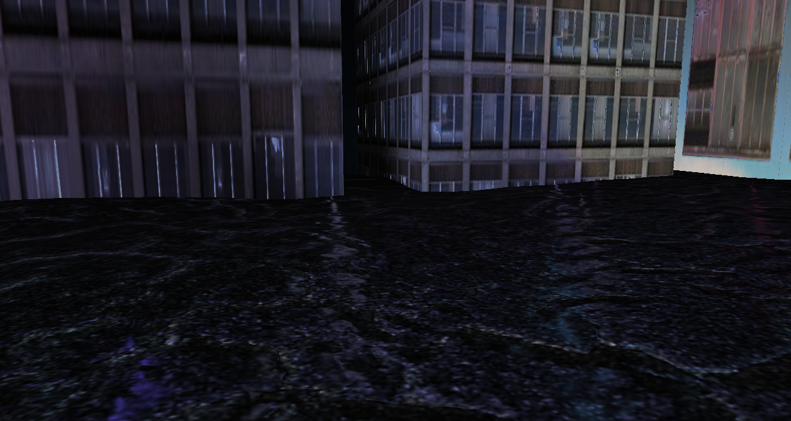

The advanced graphics for games project involved creating a demo scene inspired by the genre of cyberpunk (the assignment was issued around
the release of Cyberpunk 2077). It would involve advanced rendering techniques, such as environment mapping, deferred rendering, and some
creativity in creating an interesting and original looking scene. The project used an adapted version of OpenGL and C++.
Demonstration scene shown using manual camera
How it works
While some of the finished product has a few original ideas, at least in terms of execution, for example the specific choices I made on how to choose
the co-ordinates and sizes of the buildings in the scene, and how I wanted the point lights to appear, most of it was built to a list of suggested
features. Most difficult to achieve of them being deferred rendering, which helped increase the performance when rendering a large quantity of lights.
Other techniques I used included cube mapping for the skybox, bump mapping for the terrain, point lights to help make the scene more dynamic, and a
shader which gave the ground a wet look, as inspired by Blade Runner.
Close up of the ground
Observations
Deferred rendering was one of the most tricky techniques to implement on the project, which many of my peers weren’t able to implement. I’m
reluctant to take too much credit for this however, I mainly followed suggestions on how to achieve it, and when that didn’t work, experimented
with reordering some of the function calls. I later found out that I’d been rendering the image behind the camera after some debugging with
Nvidia NSight.
How successful was it?
Overall I achieved a mark of 64%, which wasn’t as high as I’d like, but considering my strengths and weaknesses, with 3D graphics being more of
a weakness for me, it was acceptable. I’m particularly proud of having been able to achieve deferred rendering and actually put the scene together,
however, the amount of time I spent on deferred rendering meant that there wasn’t a lot left for many other advanced features, which most likely
affected my mark in the second half of the assignment. Another issue was the automatic camera, which I had significant issues getting to work properly,
however, this was more of a secondary issue, and given how low of a priority it was, I don't think it affected my mark too much.
Demonstration scene shown using automatic camera and the problems it had
What would I do differently if I started over?
I’d have divided up my time more evenly between different advanced techniques. While I picked up a lot of marks from the deferred rendering and
presence of other aspects, I suspect my assignment contained a scant amount of actual content when compared with other students. I’d have spent
more time adding different object specific shaders in particular, as this would have been a good opportunity to add some more variation to the scene.
How I've been able to use it
While I haven’t done a lot more work with openGL in 3D since, some of the techniques have been useful in developing Shuttle Engine, and did make me
more familiar with openGL as a whole. The most useful thing I’ve found from this assignment however, is that 3D graphics remain a weak point for me, and
I intend to spend more time improving my skills in this area independently.